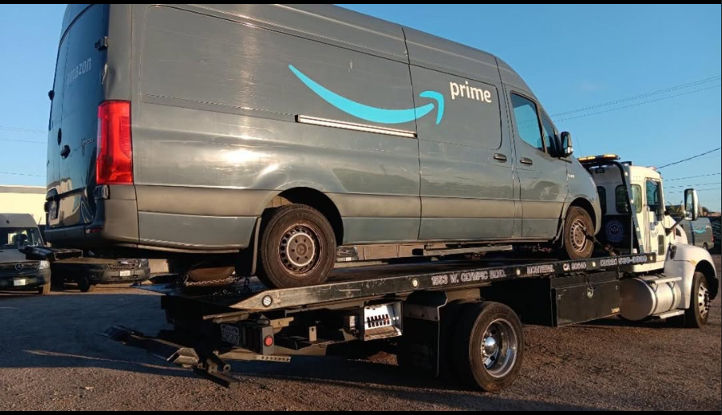
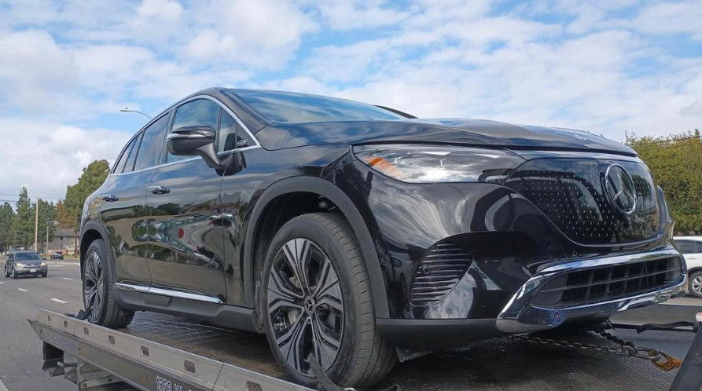
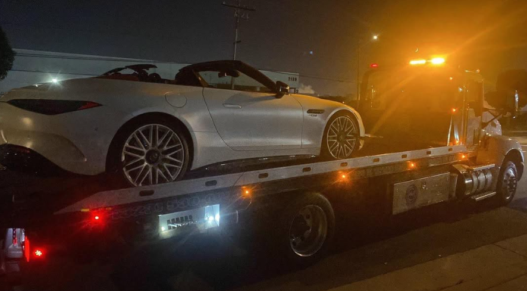
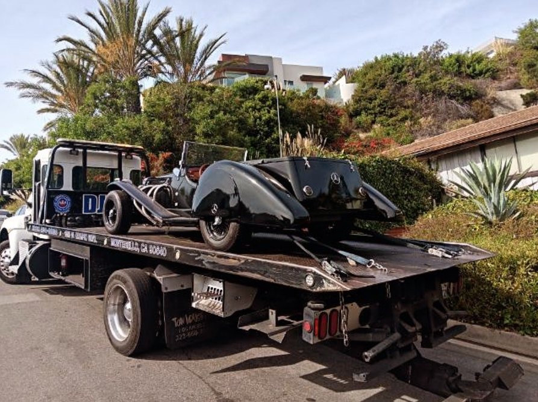

Ready When The Road Isn't.
Professional towing, accident recovery, medium duty service and private property impound support from a local team built for urgent calls.
One towing company. Six very different calls.
Choose the situation that matches what is happening. Each service has its own route instead of forcing every visitor through the same generic box.

Accident & Urgent Towing
Breakdowns, collision scenes and vehicles that need to move now.
View service ↗
Medium Duty Towing
Work trucks, delivery vehicles, larger vans and medium duty transport.
See medium duty ↗
Private Property Impound
Support for owners, managers and authorized representatives.
Property towing ↗Built for Los Angeles roads.
DJ's Towing LLC is based in Montebello and serves drivers and businesses throughout the greater Los Angeles area. The focus is straightforward: reliable equipment, professional handling and clear communication when a vehicle needs to move.
Different calls. Different equipment.
Recent towing work from DJ's Towing, mixed with supporting service photography.





Based in Montebello. Serving greater Los Angeles.
Explore the area around our Montebello home base. Drag or zoom the map to look around.